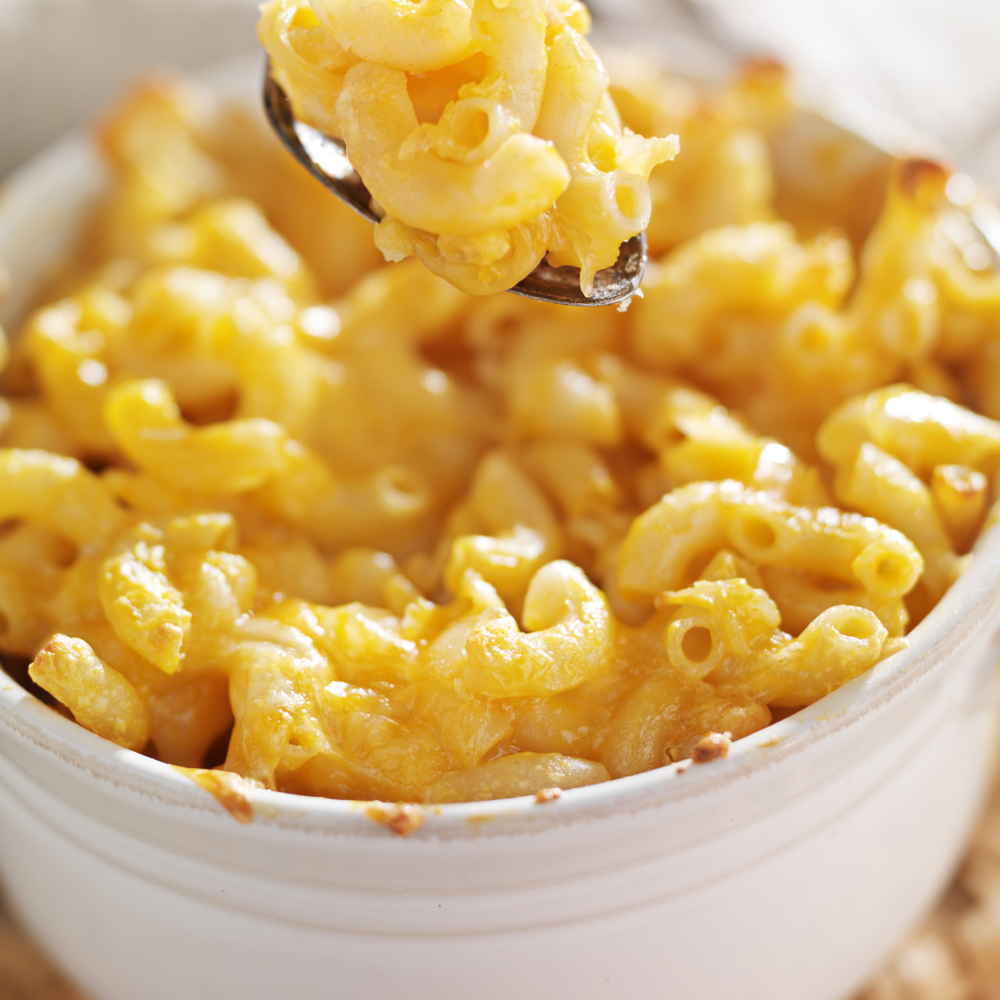

Four Cheese Baked Macaroni

This made-from-scratch baked mac and chees only takes three simple
steps.
Ingredients
- 1 (16 ounce) package elbow macaroni noodles, cooked
- 2 cups milk
- 2 tablespoons butter
- 2 tablespoons all-purpose flour
- 1/2 teaspoon salt
- 1/4 teaspoon freshly ground black pepper
- 1 (10-oz.) block extra sharp Cheddar cheese, shredded
- 1/4 teaspoon ground red pepper (optional)
Directions
- Preheat oven to 400°F. Prepare pasta according to package
directions.
- Microwave milk at HIGH for 1 ½ minutes. Melt butter in a large
skillet or Dutch oven over medium-low heat; whisk in flour until smooth.
Cook, whisking constantly, 1 minute. Gradually whisk in warm milk, and
cook, whisking constantly, 5 minutes or until thickened.
- Whisk in salt, black pepper, 1 cup shredded cheese, and, if desired,
red pepper until smooth; stir in hot cooked pasta. Spoon pasta mixture
into a lightly greased 2-qt. baking dish prepped with cooking spray; top
with remaining cheese. Bake at 400°F for 20 minutes or until golden and
bubbly.
Return to Main Menu